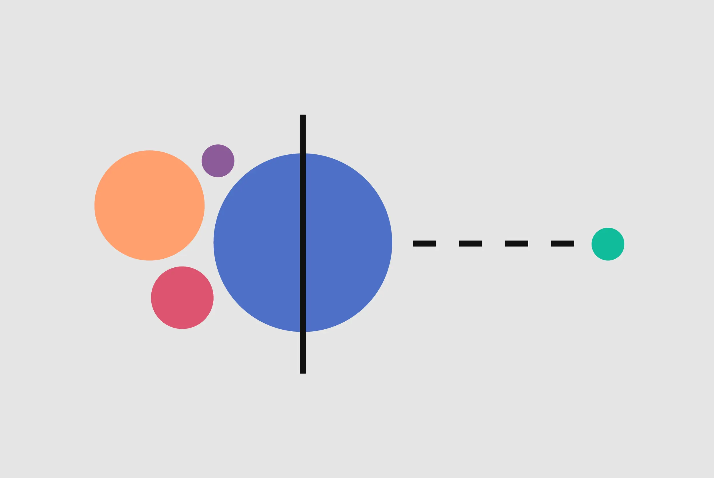
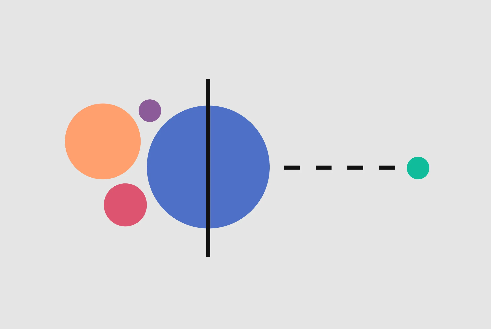
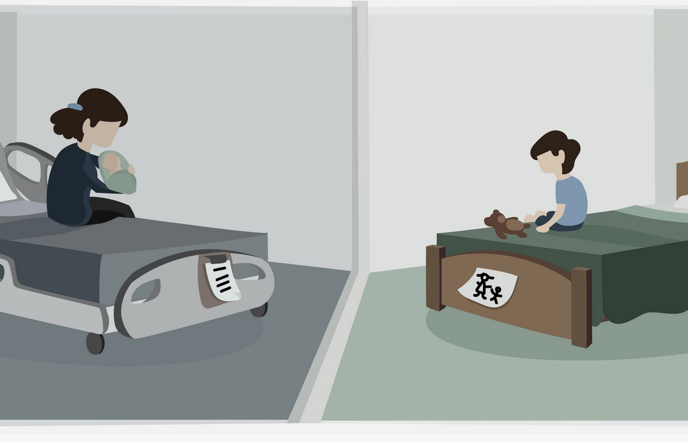
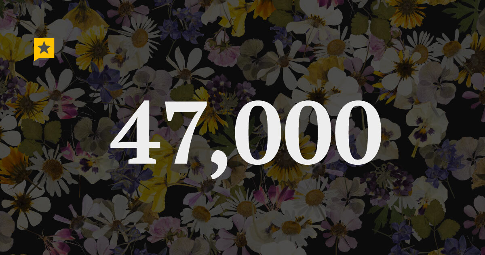
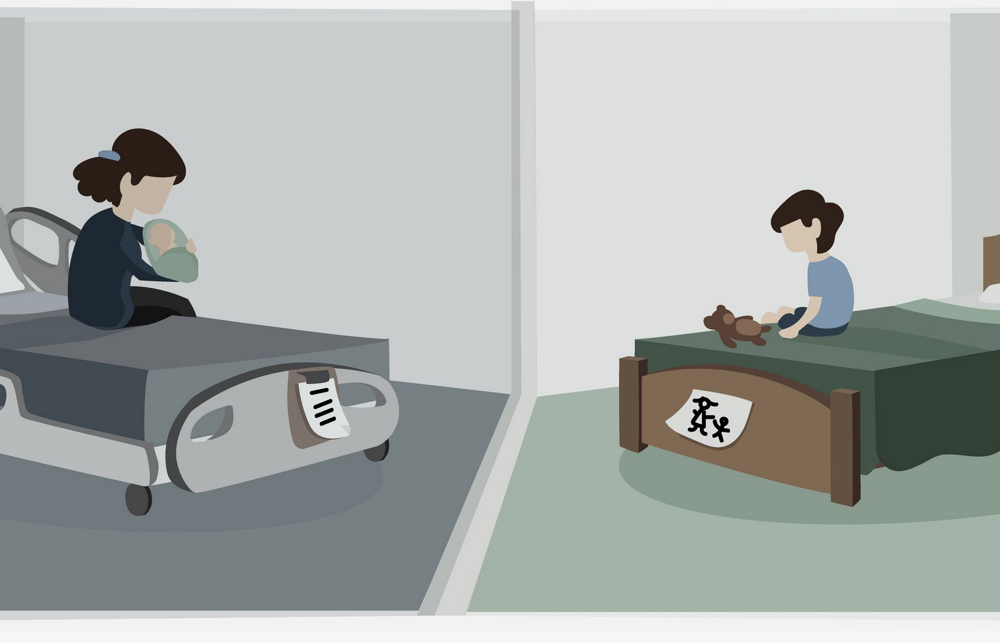
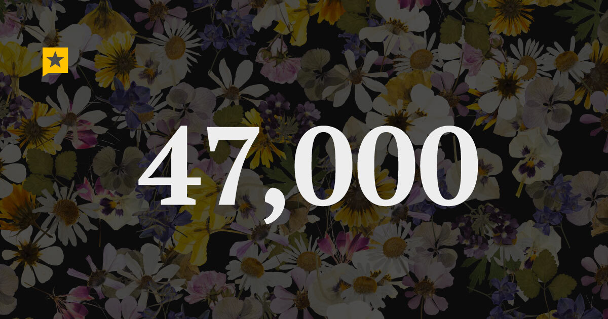
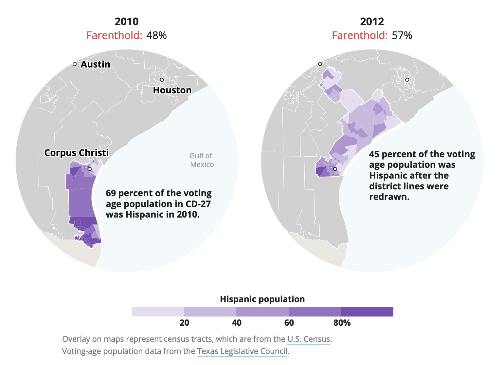
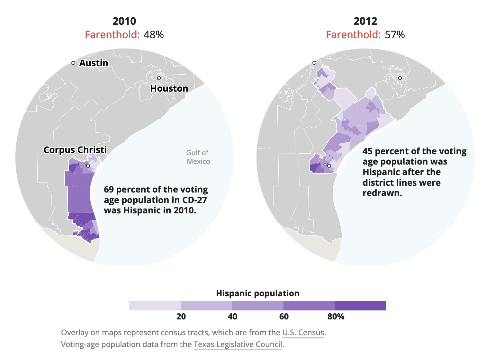

Writing
 


Development work
 




 

About Me

Chris Essig
I have almost 15 years experience working in newsrooms, helping audiences understand important stories by telling them in compelling ways. Earlier in my career, I wrote news articles as a beat reporter, shot and edited video, maintained social media accounts and updated news sites, before shifting my focus to web development and data journalism.
Between 2011 and 2022, I was a newsroom developer, which combined my passion for analyzing data and telling stories for the benefit of the public. Since 2017, I have worked at the Texas Tribune where our mission is to keep public officials accountable.
In 2021, I took on the role of Deputy Data Visuals Editor at Tribune and was later promoted to editor of the team. In this role, I manage several fantastic data journalists by giving them editorial guidance, copy editing their work, helping with technical issues, collaborating with others in the newsroom and more.
Skills
Editing
Managing
Data analysis
Web development
Writing